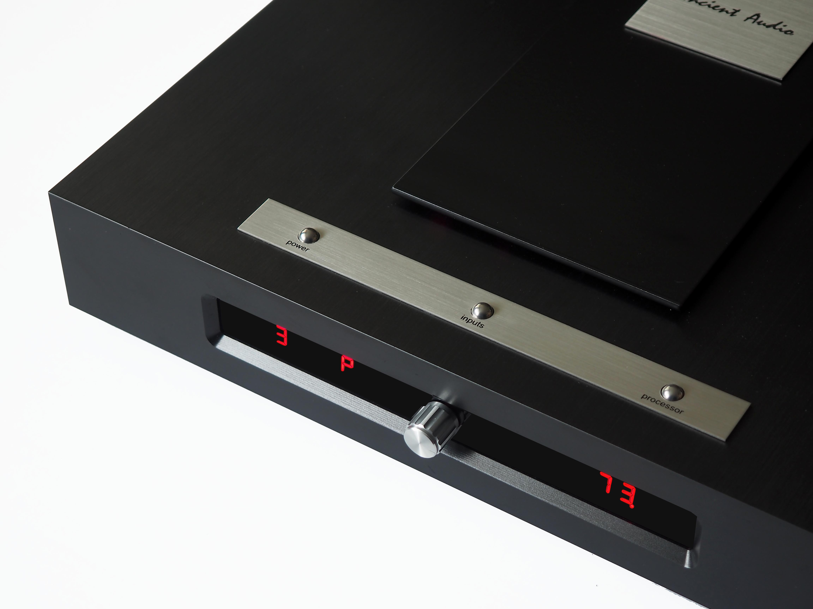

Single Solid
The core power amplifier is solid state, however operating in Single Ended Class-A at low level signals. It's build and sonic features are similar to Ancient Audio A-3 :"If you are able to stop calculate for a moment, A-3 will prove to be an amplifier capable of delivering a sensual, rich presentation with almost any loudspeakers. Its sound offers everything we value tube devices for, so wonderful 'golden' treble, powerful, rich midrange and a full, rich bass. You will find in its performance a unique depth of sound and soundstage." by highfidelity.pl
Power amplifier has dual mono toplogy, feeding by 100 000 uF set of fast capacitors, and common dual winding toroidal power supply. Despite of moderate
A-3 was great amplifier, it was driven the best sounding system at Audio Video Show '2015
It was designed as matching complete to famous P-3 Digital Speaker Processor / Preamplifier.
Excellent sound of P-3 / A-3 combo was lead to design integrated version, housed in beautiful, CNC-machined aluminium block cabinet.
Amplifier has four line-analog inputs, as well as two digital S/P DIF inputs, opearting with PCM, 16-24 bit, 44,1 to 212 kHz signal.
To more convinient operation, Processor can include up to 128 different settings for many speakers. Also, in future, processor can be removable, to easy upgrade correction of speakers data.
Due to low noise, mainternace-free solid state electronics, Single Solid are also perfect amplifier for high efficiency, horn loaded speakers.
Single Solid , as compact, hi-end , easy to operate device will be main Ancient Audio amplifiers for next decade.